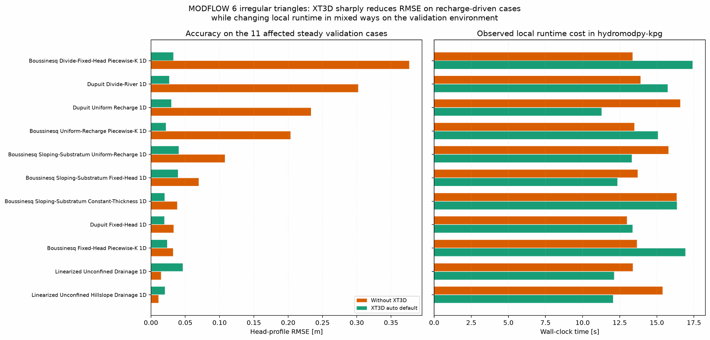

MODFLOW 6 Irregular Triangles: Why XT3D Is The Default#
Note
This page and its static assets are auto-generated by python -m tools.doc_gallery. The Sphinx build only reads committed PNG and JSON artifacts.
This note explains why HydroModPy now auto-enables XT3D on unstructured MODFLOW 6 meshes, and what that choice buys in RMSE versus local runtime.
See also
Read How to read gallery, comparison, and validation pages if you want the parameter mapping, a recommended reading order, and the first modifications to try.

Case Setup#
Uses the steady analytical validation subset that exposes modflow6_irregular_tri.
Compares the same solver family on the same meshes; only the XT3D flux formulation changes.
Measures wall-clock durations around the full validation comparison call in the local hydromodpy-kpg environment.
What It Shows#
the same 11 steady analytical validation cases run twice: once with XT3D forcibly disabled, once with the current HydroModPy auto-default,
where the large RMSE reductions come from in practical terms, especially on non-orthogonal strip meshes where sloping-support geometry must be reconstructed across oblique polygon connections,
the local runtime impact observed in the hydromodpy-kpg environment so the numerical benefit can be weighed against execution time.
How To Read It#
Read the RMSE columns first: those numbers show whether the irregular-triangle variant better matches the analytical reference once XT3D is active.
Then read the timing columns as local guidance only. They are useful for relative cost, not as portable performance claims.
For the 1D strip cases, remember that the committed comparison workflow collapses native-cell outputs to one x-profile before computing the published RMSE. That makes the gallery metric good for regression tracking, but smoother than native cell-by-cell centroid errors on the DISV mesh.
The two regressed drainage cases stay below their current tolerances; they are the main caution behind keeping XT3D as an auto default rather than silently pretending it is universally better on every metric.
Key Metrics#
Cases with lower RMSE under XT3D: 9 / 11
Cases with >= 5x RMSE improvement: 4 / 11
Total local runtime without XT3D: 215.3 s
Total local runtime with XT3D auto default: 197.7 s
Total runtime ratio: x0.92
Why XT3D Changes These Cases#
The large gains do not come from changing recharge itself. They come from changing how MODFLOW 6 computes inter-cell fluxes on non-orthogonal unstructured supports. On these strip-like DISV meshes, the no-XT3D formulation tends to misrepresent the sloping-support geometry and therefore underestimates heads across much of the profile.
Recharge can amplify that bias, but it is not the root cause on its own: the sloping-substratum fixed-head companion case shows the same support-sensitive behaviour even with no recharge term. XT3D reduces that geometric bias because the flux reconstruction is less tied to orthogonal-grid assumptions. The two drainage cases move in the opposite direction, but they stay below their current tolerances and remain the minority behaviour in this 11-case subset.
The published RMSE values on these 1D strip pages come from the committed validation comparison workflow, which collapses native-cell DISV outputs to one x-profile before scoring them. That makes the gallery metric stable and easy to compare across solvers, but smoother than raw cell-by-cell centroid errors on the native triangular mesh.
Runtime values below are local wall-clock measurements from the hydromodpy-kpg environment. Read them as relative timing guidance on one workstation, not as portable benchmark promises. Case-by-case runtime can move in either direction because XT3D changes both the flux stencil and the linear-solver convergence path.
RMSE And Runtime By Case#
Case |
RMSE without XT3D [m] |
RMSE with XT3D [m] |
RMSE factor |
Time without XT3D [s] |
Time with XT3D [s] |
Time ratio |
|---|---|---|---|---|---|---|
Boussinesq Divide-Fixed-Head Piecewise-K 1D |
0.3765 |
0.0327 |
x11.52 better |
19.11 |
15.94 |
x0.83 |
Dupuit Divide-River 1D |
0.3023 |
0.0268 |
x11.30 better |
20.23 |
19.64 |
x0.97 |
Dupuit Uniform Recharge 1D |
0.2333 |
0.0295 |
x7.91 better |
16.81 |
18.74 |
x1.11 |
Boussinesq Uniform-Recharge Piecewise-K 1D |
0.2036 |
0.0219 |
x9.32 better |
26.14 |
21.20 |
x0.81 |
Boussinesq Sloping-Substratum Uniform-Recharge 1D |
0.1077 |
0.0404 |
x2.66 better |
28.45 |
21.89 |
x0.77 |
Boussinesq Sloping-Substratum Fixed-Head 1D |
0.0696 |
0.0395 |
x1.76 better |
17.17 |
14.30 |
x0.83 |
Boussinesq Sloping-Substratum Constant-Thickness 1D |
0.0384 |
0.0200 |
x1.92 better |
18.97 |
17.17 |
x0.91 |
Dupuit Fixed-Head 1D |
0.0328 |
0.0195 |
x1.69 better |
14.90 |
14.96 |
x1.00 |
Boussinesq Fixed-Head Piecewise-K 1D |
0.0321 |
0.0237 |
x1.36 better |
16.14 |
14.77 |
x0.92 |
Linearized Unconfined Drainage 1D |
0.0147 |
0.0463 |
x0.32 worse |
19.26 |
22.02 |
x1.14 |
Linearized Unconfined Hillslope Drainage 1D |
0.0111 |
0.0203 |
x0.55 worse |
18.14 |
17.08 |
x0.94 |
Default Choice Implemented In HydroModPy#
XT3D is now auto-enabled by default on unstructured MODFLOW 6 meshes.
Structured grids keep the previous default path; XT3D is not silently forced there.
Users can still override the behaviour explicitly with mf6_enable_xt3d = true or false in [modflow6.runtime].
When XT3D is active, a SIMPLE IMS request is promoted to COMPLEX because XT3D can produce an asymmetric coefficient matrix.
The strongest RMSE gain in this subset is boussinesq_divide_fixed_head_piecewise_k_1d with a factor of x11.52.
Improved cases: 9/11. Regressed cases: 2/11 (linearized_unconfined_drainage_1d, linearized_unconfined_hillslope_drainage_1d).
Representative improved cases: boussinesq_divide_fixed_head_piecewise_k_1d, dupuit_divide_river_1d, dupuit_uniform_recharge_1d, boussinesq_uniform_recharge_piecewise_k_1d.
Next Steps#
Open the individual validation pages linked from the validation landing page when you need the full solver-specific figures behind one row of the table.
If a project uses structured grids only, keep the structured default path: XT3D is intentionally not auto-enabled there.
If a specific unstructured scenario needs the previous behaviour, set mf6_enable_xt3d = false explicitly in [modflow6.runtime].
Reproduce#
Run the underlying example or validation case with:
python -m tools.doc_gallery --only modflow6_irregular_tri_xt3d_method_choice
Refresh the committed gallery artifacts with:
python -m tools.doc_gallery
Case Parameters#
Validation Scope#
Field |
Meaning |
Value |
Source |
|---|---|---|---|
|
Steady analytical validation cases that expose modflow6_irregular_tri and were rerun for this note. |
11 |
|
|
Local environment used for the before/after wall-clock timings shown in the table. |
hydromodpy-kpg |
|
|
Rule currently applied by HydroModPy when the user leaves mf6_enable_xt3d unset. |
auto-enable on unstructured meshes, leave disabled on structured meshes |
|
Source Pointers#
tools/doc_gallery/gallery_validation_notes_specs.pytools/doc_gallery/xt3d_irregular_tri_diagnostics.pytools/doc_gallery/disable_xt3d_sitecustomize/sitecustomize.pytools/doc_gallery/manifests/xt3d_irregular_tri_method_choice_report.jsontools/doc_gallery/update_gallery.pyhydromodpy/solver/modflow6/modflow6.pyhydromodpy/solver/modflow6/modflow6_config.pytests/unit/solver/modflow_nwt/test_modflow_config.pytests/unit/solver/test_modflow6_boundary_conditions.pyvalidation_cases/README.md
Artifacts#
docs/source/_static/capability_gallery/validation/modflow6_irregular_tri_xt3d_method_choice_tradeoff.pngdocs/source/_static/capability_gallery/validation/modflow6_irregular_tri_xt3d_method_choice_report.jsondocs/source/_static/capability_gallery/validation/modflow6_irregular_tri_xt3d_method_choice_summary.jsonstores the displayed metrics plus source hashes used bypython -m tools.doc_gallery --check.